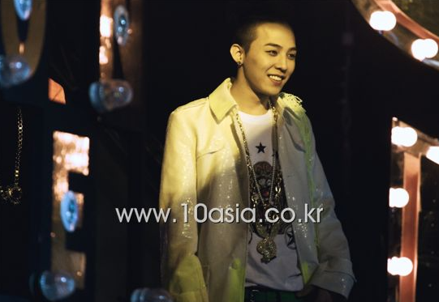

采访2011年
下面的视频来自@TtoG_ 点击进入观看完整视频
2011年1月5日
Mnet Wide News采访
下面的视频来自@TtoG_ 点击进入观看完整视频
2011年1月8日
Mnet Wide News采访
2011年1月20日
V.V.I.P专辑专访
下面的视频来自@胜利广播站FM1212 点击进入观看完整视频
2011年1月23日
MBC偶像明星运动会
胜利个人参与
下面的视频来自@V-z-l 点击进入观看完整视频
2011年1月23日
SBS Inkigayo人气歌谣
胜利 采访
下面的视频来自@V-z-l 点击进入观看完整视频
2011年1月27日
Mnet PAPARAZZI
胜利 采访
- 紧张感0 自信感100 的莉莉呀~
GD
太阳
TOP大声
2011年1月28日
TV Daily采访
CGV BIGSHOW 2010 3D premiere
见面会
下面的视频来自@TtoG_ 点击进入观看完整视频
2011年1月31日
ETN采访
试映会
下面的视频来自@时光开到荼蘼 点击进入观看完整视频
2011年2月3日
PON日本采访
2011年2月5日
UNIQLO代言 Message
2011年2月6日
Universal Studios Japan 10th Anniversary Message
下面的视频来自@陆豆纱 点击进入观看完整视频
2011年2月6日
SBS Inkigayo人气歌谣
GD&TOP 胜利 采访
2011年2月7日
胜利被韩媒采访（超长）
详细资讯： Wordpress
- 问：你什么时候觉得自己最性感？
胜利：我从来没有真正觉得自己性感过 - 问：所以你也想尝试一些积极主动的方法？
胜利：我从没真正想过自己能从中获得什么。这里是学习表演的地方，但也提供更多专业学习的机会。不过，我本身就把自己当成舞台演员。我本身就是个演员。唱悲伤的歌时，我会表现得悲伤；唱欢快的歌时，我会表现得欢快。我不认为演员和歌手之间有严格的界限。我上大学的原因是，我想学习一些除了待在公司里之外的东西。例如，人际关系。我想体验这些。这些东西是金钱买不到的。大学生活只有一次……我浪费了我的高中时光。我对高中没有任何记忆。那真是我人生中的一个污点。以后儿子问我：“爸爸，你的高中生活是什么样的？”我会说：“爸爸，我没上过高中。”一个父亲应该这么说吗？这会让儿子很尴尬。所以我决定体验一下大学生活，于是我开始尝试，并意识到了很多事情。那里没有名人之类的东西。高年级学生和低年级学生之间的关系很严格，礼仪之类的规矩也很严格。有一次，我试图打破这种隔阂……^^ 我差点惹上大麻烦^^ 我说：“嘿，你都21岁了，学长学姐什么的？你是我的朋友！”然后我的朋友们阻止了我。这事我只遇到过一次 - 问：你说你上大学后会有很多约会，但你好像根本没机会认识人，对吧？
胜利：我倒是遇到过一次。我在《强心脏》节目里讲过。我走进教室，前面坐着一位教授。他比我小一岁，但是长得很帅。那家伙一直在小声说话。他说“开会”，我立刻回应。他说“四对四”。他是在一所女子大学。所以我就问，“哦，怎么回事？” 他是在和女子大学声乐系的女生们开会。当时，我拖着轮椅问：“我可以加入你们吗？” “你没事吧？你是Bigbang！你不能这么做，对吧？” “嘿……Bigbang就不能开个会吗？” 他说：“好吧，只要你不介意就行！” 于是我们就五个人一起开了会。我不能让谣言传出去，所以我租了一家咖啡馆！我租了一家咖啡馆。感觉很棒。我去了。感觉很棒。但是他们没认出我。胜利。看来我的声乐界朋友们都不怎么看电视。学艺术和体育的朋友之间，竞争的时候并不需要长得漂亮帅气什么的。但实际上，那个最后坐下的朋友现在正在谈恋爱，而且他们现在相处得很好。这集里就有这么一段故事。我之所以开这个会，是因为我想感受那种兴奋感。我当时心跳加速。名人可不想这样。想着“我该怎么做才能那样？”是很愚蠢的。我需要体验各种各样的事情。如果我之后要在会议上表现得兴奋一些，我该如何表达这种兴奋之情呢？——这类事情可以为歌词创作提供灵感，对吧？朴信阳说他为了拍摄电视剧《Sign》花了六个月时间解剖尸体。唱歌也是如此。我认为唱悲伤歌曲的人之所以唱得最好，是因为他们经历过分手。这关乎于创造共鸣 - 问：G-Dragon和TOP出演了《Every Night》节目，并谈到了胜利。胜利对此有何看法？
胜利：哦，Top的娱乐天赋！我有个叫“胜利学院”的东西。Top不久前加入了。Sandara Park、Park Bom 和 Seven 都来了，G-Dragon 前段时间问过我价格，但实际上，这是……有两种方法可以让人发笑：批评别人或贬低自己。但其实这两种方法并非一无是处。只是我们的成员，我不知道该不该这么说，但他们的表达能力不如我。至少就我所见是这样。因为，像我一样，我喜欢和人交往，但却没多少时间社交。有些人真的很害羞，所以他们总是向我道歉：“对不起。”毕竟，我们是“生活大爆炸”团队，所以如果我们去上脱口秀，应该会很有趣，对吧？是Bigbang，但如果Bigbang不好玩，大家就不会说“搞什么鬼，Bigbang！”如果它好玩，大家就会说“不愧是Bigbang！你们真会说话！”为了听到这些，胜利需要你的故事。抱歉。然后我会说，“没关系，没关系。” 因为我是最小的……“你为什么这么说？”大概是这样吧？^^ 但其实，我属于那种喜欢自嘲来逗别人笑的人。我不太喜欢别人批评我。因为我给人的印象是，如果我批评别人，他们会觉得“搞什么鬼？”。但我们的成员们并不介意批评我。我想这可能是因为胜利原本就很可爱、活泼、很善于交际吧。我觉得那不是真的，因为他们是很好的朋友。我不会批评成员们，我知道这一点，所以我并不为此生气。真的。但现在他们很感激我，这让我有了更多想说的话。“哦，原来是这样？原来是误会。”一切都解决了。故事也圆满结束了，剧也完结了！我感激不尽。^^ - 问：我不确定其他的事情是否属实，而且也不是每天晚上都这样，对吧？你是不是经常偷偷约会？
胜利：秘密恋情！我有很多秘密恋情！我想说的是，我是不是唯一一个有秘密恋情的人？还有谁有呢？^^ 我是唯一一个有过秘密恋情的人吗？^^ 就先说到这里吧……^^ - 问：在《VVIP》的MV中，你模仿了Bigbang的五位成员，一人分饰五角。如果让你选出最难模仿的成员，你会选谁？
胜利：一点也不难^^ - 问：一切都那么容易吗？^^
胜利：一切都很简单。因为我已经关注他们五年了，而且我的记忆力出奇地好^^ 人物特点、台词、说话方式等等！我对他们的一切都记得清清楚楚，甚至知道成员们做的每一件事！因为我了解他们最喜欢的手势、面部表情、姿势、手部动作、说话方式、音域、音符、旋律等等，所以我不到30分钟就完成了所有拍摄。然后我把照片给成员们看了。Top哥问我“你为什么给我发这张我的照片？”^^ 因为太像了^^ 既然要做这样的事，就一定要做到最好。我真的穿了成员们穿的衣服，而且在发型之类的细节上也下了很多功夫 - 问：你是怎么想到要cosplay音乐视频中的成员的？
胜利：这个想法确实是我提出的，但实际上，早在我们选定音乐视频导演之前，我脑海里就有了这个想法。歌词里有一句是“你是现在最火的五件事之一”，我当时就想，如果Bigbang的五位成员一起出来，然后重新聚在一起，那该多好啊。这主意挺有意思的。不过既然是Bigbang，那就全是胜利一个人的事儿了。这就是我为什么想扮演一个奇幻角色的原因。这首歌讲的是一个“VVIP”掉进胜利的世界，然后也变成了真正的VVIP！当我听胜利的歌时，我想到了胜利变成Bigbang成员，然后又变回胜利，接着表演魔法消失又出现，我想成为一个奇幻角色。这就是我产生这个想法并开始拍摄的原因 - 问：在你的第一张迷你专辑中与人气歌手IU一起唱歌感觉如何？
胜利：我看到IU的时候，心想“这到底是怎么回事？”她唱歌真的太好了。真的。事实上，她来了之后三个小时就录完了。她跟我关系真的很好。三年前，在IU出道之前，我通过一位熟人认识了她，我们一起吃饭、一起看电影……IU……当时正值Bigbang凭借《谎言》走红的巅峰时期……而IU也出道了。于是我问他：“你什么时候出道？”他说一个月后。我当时很傲慢地对他说：“只要你努力，全力以赴，总有一天你会成功的！”结果三年后，这家伙真的火了。这首歌现在太火了，简直就是“流行”的代名词！所以我求IU帮忙！“我们一起唱吧！”我根本不是在求她，我是在逼她！有点威胁的意味。我开玩笑说：“我为你准备了一首甜蜜的二重唱，快来唱吧！”IU听了这首歌后欣然同意了。她问我：“这首歌绝对不是YG的风格，你是怎么获得授权的？”但仔细想想，确实如此。这是YG不可能制作的音乐风格。这是一首感觉有点怪异的对唱歌曲，有点像流行歌曲或者K-pop歌曲。那是因为我告诉IU要把它唱成R&B歌曲，而不是K-pop歌曲。因为我们是YG……一家主要做黑人音乐的公司，所以我们要求他们即使是流行风格的歌曲也要唱成R&B风格。但现在，杨社长想要的就是这种风格的新歌。他真的很喜欢这首歌。他说：“哦，这首歌太好听了。”他并没有直接告诉我他喜欢这首歌，但他私下里小声地谈论过它。（模仿杨社长）“我喜欢这首歌”^^ 不要大声说，小声点^^ 其实，他不太喜欢别人夸我。他很了解我。他知道夸奖我会让我感觉更好，所以他总是克制自己。他知道该如何对待我。他又轻声细语起来。（模仿杨社长）“我喜欢这首歌”^^ 我很高兴IU唱得这么好，我们最终得到了一首很棒的对唱歌曲。希望很多情侣去KTV的时候都能唱这首歌 - 问：你如何缓解压力？
胜利：哦，我要开车兜风！我要开车兜风！我真的很喜欢开车，所以我放了点音乐…… - 问：你通常往哪个方向走？
胜利：我不太常去仁川机场附近，因为过路费太贵了。我一般往临津阁方向走，经常走那条路。去日山的乍路不太好，路面有点颠簸，要小心别出事故，有点危险。据说男人天生就有竞速的本能，跑完步后，一切都会感觉轻松自在，压力全无。当然，超速很危险！偶尔在限速范围内行驶是件好事。还可以放点音乐放松一下 - 问：你有没有对你的粉丝感到过最愧疚的时候？
胜利：就是现在！人们会问：“你在哪儿？”“我快到了。”“你在哪儿……你在哪儿？”“我到了。”“好了，够了。”就是这样。信任就在这里。Bigbang的专辑过去两年一直在陆续发行。它们要发行了，要发行了。“月底了。”“哇……又延期了。”“夏天到了。”“又延期了。”“啊……因为日本的宣传活动，所以没办法。抱歉。”今年，胜利的专辑先行发行。GD和T.O.P的专辑也先行发行。现在，我退出了。我累了。我为大家感到难过。这就是为什么成员们如此害怕和压力巨大。现在，我做音乐的时候，比以往任何时候都更加担心，“这样做对吗？”虽然每位成员都各自活跃于乐坛，但“Bigbang”这个名字本身就具有独特的魅力。目前的Bigbang成员包括G-Dragon、T.O.P、太阳、胜利和大声。因为每个人都太强了，我不确定他们出道后大家还会不会把他们看作是Bigbang。他们真的太强了……我在电视上看到“嘿！G-Dragon出道了！”，是G-Dragon，是T.O.P，是胜利，是大声，是太阳 - 问：你的意思是说，看起来可能像是5个单人成员……
胜利：对，对……没错……因为他太强了……因为他的个性太强了……队长哥也这么说过。啊……我有点担心。”别担心，这是幸福的担忧……这是我们需要解决的另一个作业……他们也是这么说的……但如果以后再遇到，我想应该没问题，因为我们能很好地整合^^ - 问：你不想拥有像GD TOP那样酷炫的发型吗？
胜利：我其实不太喜欢太激进的造型。实际上，这已经是我的第五次剪发了。我尝试过很多不同的颜色和发型，但从来没有一个让我满意的。但如果我担心我的头发，我就无法在舞台上发挥出色。无论是服装还是发型，只要有什么让我心烦，我就会毁掉舞台。我需要专注于唱歌跳舞，但比如说，我的裤子有点大。所以，如果你在舞台上老是滑倒，就会毁了演出。例如，如果我在某个舞台上穿鞋，结果鞋滑了，演出就毁了。如果一个环节出了差错，一切就都结束了。所以，从一开始就必须掌控好节奏。如果因为发型和服装而打乱节奏，就会毁了整个舞台。所以现在像服装和发型之类的事情我都交给专业人士来做，因为我不懂。我擅长的是唱歌跳舞，服装和发型就交给专业人士吧。为那个人是专家，他看了看我的脸型，说：“啊，胜利是这种脸型，所以这种发型适合他。”然后，确实很适合他。我信任他！因为他是我的商业伙伴！就连穿衣打扮这种事，我也会想，“哦，胜利穿这件衣服很好看，这种风格的衣服和这种音乐很搭”，然后就交给专家来做。我根本没插手这部分。因为像GD和TOP这样的人知识渊博，而且非常贪婪，但我喜欢简单明了的东西。我想展现那种干净利落的外表下隐藏的性感。其实，我觉得华丽并不代表就一定酷炫性感。G-Dragon 和 TOP 就做到了这一点，所以很酷^^ 我也尝试过。结果有点滑稽，有点滑稽^^所以，我想展现胜利的风格，同时也展现他内在的智慧和性感。如果你说“我想像G-Dragon和T.O.P一样酷”，然后把头发染成白色或金色，或者穿闪闪发光的衣服，那并不是胜利。所以我才说，我们以后都不要再这样做了 - 问：胜利的明星朋友都有哪些？我很好奇你都和哪些人一起玩！快来分享一下吧！
胜利：我认识了很多人。我以前和少女时代的成员们关系很好，但说实话，最近关系不太好……^^ 我就不细说了^^ 我们吵过架^^ 我和2PM的黄灿星同岁，我们关系也不错。此外，还有代表性的例子，比如 Kara 的具荷拉，她现在处境不太好，我有点难过……FT Island 的崔钟勋，吉他手……队长……还有……MBLAQ 的 Thunder 和 Sandara Park 的弟弟最近也在那里。还有……Brown Eyed Girls的孙佳人！我和孙佳人关系真的很好。还有Davichi的姜敏京……其实我们私下里不见面。我们这类事情都是通过电话或短信聊，互相鼓励 - 问：你们是在共事过程中变得亲近的吗？还是说你们认识很久了？
胜利：有时候，我们会因为工作而变得亲近。有时候，也会有人主动联系我，说想和我亲近。^^。这样的情况也发生过。嗯，有很多不同的人，其中也包括演员车艺莲 - 问：我想知道事情怎么会变成这样？
胜利：是的……不过我们关系没那么亲密^^ 希望你春节或中秋节假期愉快~ 之类的~ 其实，我以前不太喜欢明星。直到最近……现在我年纪大了，有了学弟学妹，生活确实轻松了一些，但我还是想过那种半明星半普通人的生活。我想要完全的自由，不想被这些束缚。即使我与人见面，重点也不在于Bigbang的胜利，而在于与人真诚地交流。友谊也是人与人之间真诚交流的结果，但当我遇到名人时，即使我尽量避免，有时还是会在不知不觉中感受到阶级差异的氛围……我不认为情况就是这样。也有这样的人。“你好？”“哦……是的……你好……”“你经常练习吗？”“哦……嗯……嗯……”我也是这样。“你经常练习吗？”“我们见面一两个小时~ 经常练习有用吗？”就是很难^^' 这很真诚也很好，不是吗？不过现在，我的好朋友都是和我想法一样的朋友~ 但和这些朋友相比，我有点格格不入。现在，我觉得自己有点像个普通人，但也有点像个名人。但我感觉这很有趣。我对眼前的一切都充满好奇，所以每次去咖啡馆我都会问问题。我不点自己喜欢吃的东西。问“欧尼，你喜欢吃什么？推荐一些你喜欢吃的吧！”很有趣。然后她们真的会很喜欢。“我？这个味道像这个，这个味道像这个~你喜欢什么口味的？”我会给你带去。“太好吃了！”如果你这么说，你那天就会很开心。真的会很开心。那样的话，我的形象也会改变。“我以为你因为是Bigbang所以说话会很直率，但你不是？”我想打破这种印象。Bigbang 是一支很棒的团队，但我不知道为什么人们会觉得他们粗鲁、傲慢、可怕。他们就像情景喜剧里的角色一样有趣~ 我的哥哥们~ 诸如此类的事情……我只想过快乐的生活^^ 我的想法是想让别人开心。在成为名人之前，我的梦想是成为一名娱乐活动指导员。如果我能拿起麦克风说几句话，逗大家开心，我就很满足了。但我跟经理吃完饭后就离开了，把车停在了代客泊车处。我上车的时候，泊车员说：“祝您新年一切顺利”，然后关上了车门。真是太好了。虽然只有一个词，但我真的相信新的一年会充满美好。这就是我的灵感来源。VVIP……我觉得听我专辑的人那天都会很开心，一切都会好起来的。这就是积极心态的力量，也是正确的答案。我想用音乐来表达这种感觉，但当然，其中也存在一些不足。不过，我还是想传达这种感觉，即使只是通过采访这种口头表达的方式 - 问：自出道以来，你经历过的最恐怖的事情是什么？
胜利：那是一段可怕的经历。三年前我经历了一段低谷期，因为我无法控制自己的情绪。我年纪轻轻就出道了，突然就走红了。但在直播中，G-Dragon 对我说了这样一番话。直播中，我问他：“组合里有谁看成人片吗？”，G-Dragon 回答说：“胜利！” 当时我尴尬极了。真的太尴尬了。我当时还是个孩子，觉得很丢脸。而且所有粉丝都在看。我当时很害怕自己会变成那种喜欢看低俗内容的会员。现在我可以一笑置之，说：“看色情片？你是说棒球视频吗？” 但那时候，我对广播行业一窍不通。我当时还不是明星，只是个怀揣明星梦的人。就在那时，我陷入了低谷。我控制不住自己的表情，整个人僵住了，脱口而出：“我？”成员们都慌了，纷纷问道：“你在看胜利吗~~^^”或者“不，你没有？”现场气氛变得紧张起来。电视台的气氛也变得很紧张。你觉得怎么样？相机闪了一下红灯。真是吓人。我开始冒冷汗。从那以后，我就麻烦不断。在车里，我被骂了好多次，他说：“你是明星吗？喂！电视台是那种即使难过也要笑，即使搞笑也要哭的地方。你在开玩笑吗？” 我一个人哭了好多次。我也是人啊，生气的时候就是生气，开心的时候就是开心……我哭得那么厉害，就因为他只是在开玩笑。先生给我打了电话。他肯定听到了我刚才说的话。他问：“怎么了？”“没什么。”“你哭了吗？”“没有。”“你哭到眼睛都肿起来了吗？”“哭了。”然后他说：“胜利，你也要控制好自己的情绪。”例如，如果棒球运动员情绪激动地投球，他很快就会被击出全垒打，因为他无法控制球速。道理是一样的。如果电台歌手唱歌时无法控制自己的情绪，唱悲伤的歌时大笑，唱搞笑的歌时又难过，这对听众有什么好处？我觉得自己被坑了。太尴尬了。那些场景。从那时起，我的播音价值观发生了改变。我如今的胜利正是建立在这种改变之上。我可以应对任何问题或攻击。我认为，正是这种更机智的应对方式，最终成就了今天的我 - 问：那是广播吗？
胜利：我出去看了。如果你仔细找，就能找到。如果你看看胜利的色情事件，他的表情瞬间僵住了。他的手脚都蜷缩起来了，真是太诡异了。你知道那种氛围吗？那种令人毛骨悚然、尴尬的氛围。其实，如果有人邀请我去参加生日派对，我一般不会去。大多数人过生日的时候都会邀请很多人来参加派对。例如，如果我去唱卡拉OK，会遇到一些我认识的人，也会遇到一些我认识的人。然后，还会遇到一些认识我的人，也会遇到一些我不太熟悉的人。所以他们彼此并不认识。好的！我们见面了。“让我们举杯！”然后，他们之中总会有一个人不举杯。这里，有一个人没有举杯。然后我们就在这儿聊天。“来，干杯！”“哦，我不能喝酒。我带了茶。”“哦，那我们喝点咸的吧。”“哦，我不能喝酒。”“所以我才说喝点咸的。”“你一直这么说是因为我不能喝酒。”然后就吵起来了。我讨厌这种氛围。韩国是个各种性格的人都有的国家，这种事难免会发生。正因如此，我才学到了很多。与此同时 - 问：你是Bigbang里年纪最小的，对吧？粉丝们都知道你很受哥哥们的宠爱……Bigbang成员们觉得你最棒的是什么？其他组合的忙内们又会羡慕你什么呢？（请从忙内的角度认真回答！）
胜利：哇，你的生日！真是太棒了！礼物太精美了。你们收入都很高，而且收入稳定。每个生日礼物都很棒。鞋子、外套、包包，随便什么都行……其实，这只是成员之间的礼貌，也是一种表达感激之情的方式 - 问：你们会送礼物和举办派对吗？
胜利：我会打开它。我会说：“嘿，伙计们，我来搞定。来吃饭吧！”然后，我们会去餐馆或肉店，聊天，聚会什么的 - 问：在你活跃期间，哪位粉丝最独特或者哪位粉丝的经历最有趣？
胜利：他不是我的粉丝，但有个粉丝真的很棒。他是T.O.P的粉丝。他手里拿着一块葵花籽饼干，在一堆饼干里等着呢。Top一下车就把玩具扔到他脸上。他是B型血，所以很容易生气。他生气了，就问：“你为什么扔玩具？” Top那样做吓了他一跳，他说：“对不起……”我看到一本杂志，上面说有粉丝在签名会上打了姜栋元一巴掌。但姜栋元记住了那个粉丝 - 问：所以你这样做是为了让它令人难忘？
胜利：是的^^ 曾经有一次，Top说：“请不要再那样做了。” 这背后有个故事。Top哥很和蔼地跟我说：“请不要再那样做了。” 然后他就签了名……但谣言还是传开了。我这么做的时候，他对我很好^^ 我的粉丝们都对这个故事着迷了。那些小孩子，他们想得到胜利欧巴的喜爱。那天是他的生日，他们准备了一份礼物。在他上车的时候，他们一边喊着“胜利~~”，一边把礼物扔向他，想打到他^^ - 问：所以，那是真的吗？
胜利：是的！没错^^ 哦，我的天^^ 我之前过得很艰难^^ 确实有一集就是这样 - 问：你把那个朋友怎么处理了？
胜利：哦^^ 我觉得你这样做并不会让我记住更多什么^^” 我澄清了误会……哦^^ 之前确实是这样^^ - 问：胜利的粉丝服务真的超级棒，不仅在Bigbang里，和其他艺人相比也是数一数二的！胜利对粉丝服务的定义是什么？
胜利：粉丝服务！！这是最基本的！我是这么想的。我们的成员们，当我积极参与粉丝服务时，他们有时会感到尴尬和羞愧。这或许是因为成员们的个性，但我认为这很自然。至于粉丝福利，我被分配到的舞台时间是3到3分40秒之间。但无论天气冷热，歌迷们都要排队等候5到10个小时，就为了看那场演出。从黎明就开始……这该有多难熬啊……换位思考一下，就算我再喜欢这位歌手，我也不想为了那短短3分钟的表演而等上5个小时。这是我的想法。他们确实这么做了。他们想见你，想听你的歌，即使这意味着要那样做，但他们很贪婪。我希望看到更多这样的互动。我希望他们能做得更多。我希望他们能更亲近一些。这就是为什么我会做更多粉丝福利。我甚至还会模仿别人的声音 - 问：你也会模仿声音吗？
胜利：当然。为了模仿声音，我甚至会告诉摄像导演要微笑！在电视台，摄像导演总是这样站着。真是太烦人了。但这就是微笑的力量！人们微笑一次，心扉就会敞开。那是奥巴马总统。听奥巴马总统演讲的时候，我心想：“为什么这个人这么受关注？为什么成千上万、数百万人都如此全神贯注地听他的演讲？他们都屏住了呼吸。”后来我才明白，原来是“幽默”。在那30分钟的演讲里，我笑了大概5次！ - 问：它出现的时机真是太好了！
胜利：没错！如果很有趣，我就能集中注意力。“接下来该讲什么呢？”所以，即使是在表演的时候，我也会时不时地逗大家笑一笑。“好啦，摄影指导们~加油！！！！！”然后他们就笑了^^ 好可爱。“我去。”最好说“摄影指导们，加油！！！！！”“好了，粉丝们，开始！一！二！三！开始！！”然后微笑。当你微笑时，你的心扉会敞开。它会让你想要做得更好。一开始就搞笑和一开始只是拿着摄像机是两回事。我很好奇摄影指导们有多少这种倾向……他们会说，“这家伙真有趣！太棒了！我一定要把他拍好！”当你敞开心扉时，你会投入更多的真诚，这完全不同！是是是……我今天一进来就听到：“啊！你吃过饭了吗？冷吗？哦不不不！我们换个位置吧！让经理换个暖和点的地方！你思想很开放，对吧？^^ “哦！我很好奇那家伙在搞什么鬼？”让你这么想！！这才是重点。就这么进来，说“是的……你好……有问题吗……？”……我不太想这么做。不仅在面试中如此，在社交和商务关系中也是如此。没错。所以粉丝服务是必不可少的^^！！ - 问：你的理想型是什么样的？
胜利：说实话，有理想型的人都是傻瓜。蠢货。你永远不知道你喜欢的女孩会在什么时候、在哪里出现，但如果你只有理想型，你就会终日沉浸在对那个人的幻想中。世界男女各半，想必有很多才华横溢、容貌姣好的人。但如果你只创造一个，然后一直等待这个人出现，那么其他才华横溢、容貌姣好的人就无法加入进来了。这太蠢了。所以，请直接在括号里写上：“胜利永远敞开！” - 问：制作这张专辑过程中最困难的是什么？
胜利：一开始我真的很害怕。这是我的第一次 - 问：但还有《Strong Baby》呢，对吧？
胜利：但那首歌不是我写的。啊，原来我担心的是整个项目能否顺利完成！我好害怕！我当时对自己没信心。“我能做到吗？我能写出一首歌吗？” 说实话，我对编舞很有信心。因为我编舞很久了……我脑子里全是……我有这方面的知识！我当时想，“哦，我们这样弹，那样弹！”但到了唱歌的时候，却感觉空洞无物。我当时非常害怕，心想，“这样对吗？”因为G-Dragon过去曾卷入过抄袭风波，我看到他的音乐事业因此受到了一些影响，而且……因为就我而言，虽然我当时表现得很好，但类似的事情也发生过一次，不过那是我第一次遇到这种情况，所以我害怕如果再次发生类似的事情我会怎么办，我真的很害怕音乐。因为这是我第一次如此深入地接触音乐。我加入Bigbang已经五年了，但这是我第一次独自一人尝试创作音乐，所以我真的很害怕。所以我故意熬夜，拼命学习。专辑发行后，我在手机上装了个程序，专门用来搜索类似的歌曲。现在，在试听了一遍之后，他问道：“你们有没有特别喜欢的歌？”以及“我觉得大家最喜欢的歌都是我以前听过很多遍的歌。”^^幸好大家没怎么说话，但我真的很害怕，因为这是我的第一次。我想，“只要我尝试，就能做到！”，但音乐部分有点难！ - 问：所以，你是不是有点完美主义倾向了？
胜利：没错！我最讨厌敷衍了事。有个节目组让我重现之前的表演。他们原本有十个舞者，结果只要求四个。“不行！把他们都带来！把我们十个人都带来，把整个表演都演一遍！”他们就是这种人。这种发型必须做得非常精致，所以我有点害怕，也觉得很困难 - 问：如果你必须做整形手术，你最想做哪个部位的手术？
胜利：哦，其实是整容……我刚出道的时候，杨社长推荐我去整容，所以我就去了一家整形诊所。是因为黑眼圈。现在好多了，但是眼下还是很黑。所以我就去了江南区一家很有名的S整形诊所。^^我问：“那我呢？”他说：“啊！回去吧，回去吧。”“回去？”“你是因为黑眼圈来的？”“是的。”“不，不。”于是我问：“为什么没效果？”他说黑眼圈的出现有三个原因。你得肝病不好、鼻炎、眼部结构差……“胜利这三样都有！滚回去！”他们都这么说。事实上，我家肝病是家族遗传。我不能喝太多酒，也不抽烟。吸烟有害健康。它会导致眼睛发黄、血管肿胀。这就是为什么我父亲戒酒，并且出于健康原因，他也戒烟的原因。说实话，我对自己的外貌和身材没有任何不满。这是上帝赐予我的身体，是命中注定。我的父母给了我这副身体，我为什么要动刀呢？这就是我不整容的原因。我的团队成员也都不整容。相反，我会好好保养自己。想要变得漂亮需要付出努力，但我决定不去整容，而是把黑眼圈当作自己的魅力，所以我经常谈论它，并不觉得尴尬。“胜利，你的黑眼圈怎么这么重？” “你不知道吗？这是我的魅力所在。” 无数人都深受黑眼圈困扰，无法摆脱。我这么说，显得自己很可爱。如果我尴尬地说出来，听起来会很奇怪。但人们会说，“这就是我的魅力所在！”而我会说，“哦，你真可爱！”这些词语和表达方式截然不同，打动人心的方式也大相径庭。但这正是我想要表达的 - 问：想和这位成员一起演唱这首歌。请问有这样的平台吗？
胜利：其实，《White Love》里有一段说唱。我问TOP要那段。“帮帮我！”他说：“好的！”然后就听了。然后他立刻斩钉截铁地说：“这不适合我。”所以，原本我是要和T.O.P一起合作的，但没成，最后就自己一个人完成了。这就是事情的来龙去脉。音乐方面，大家都很冷静，并不是说我做不好。^^ - 问：最近有没有特别喜欢的女团？（2NE1除外）
胜利：首先是4Minute的泫雅！虽然年纪轻轻，泫雅却很擅长在舞台上营造性感舞蹈氛围。这种氛围很难达到。事实上，我创造胜利这个角色也是出于想要成为韩国其他歌手所没有的性感男歌手的动机，但从我的角度来看，泫雅现在已经二十岁了。我之前和他一起参加广播节目时问过他这个问题……他那个年纪要付出多少思考和练习才能达到那种感觉？当然，以前我常常想，“为什么一个孩子要这么努力地模仿大人呢？” 但现在回想起来，我不这么认为了。她模仿得真的很像，让人信服。那个叫泫雅的朋友。这位朋友真的很有女人味，会让男人发出“哇……”的惊叹。事实上，所有女歌手都需要这种魅力。就像男人可以俘获女人的心一样，女人也应该能够俘获男人的心。最优秀的女歌手会让你不禁感叹：“啊……我真希望有一天能见到她。”例如，李孝利也是如此。她是我很想至少见一次面的女性。她性格随和，舞台上性感迷人，平时可爱又风趣幽默。正因如此，我认为泫雅未来一定会更加出色。接下来是After School的Lizzy和Uee。Lizzy来自釜山。她心态非常积极乐观，就像那个充满正能量的主角一样，她非常开朗，总是对一切都充满好奇和乐趣，她快乐又有趣。这是我们认识以来我第一次被打。^^ 他打我了。^^ （釜山方言）“欧巴~~~ 你怎么这样~~~” 但我的朋友并不讨厌他。他真是太可爱了。但这种朋友在娱乐圈很受欢迎，也更容易相处。因为娱乐圈是个充满危险的地方，我觉得一个开朗阳光的朋友来来往往，无论走到哪里都会被人喜爱。相比之下，After School的Uee似乎是个很有主见的人。而且我觉得她跟我很像。^^ 她反应很快，而且是个很有深度的人。所以，如果有人像这样（只看一个地方）观察某件事，那么这个人就是在（广泛地）观察它。即使摄像机正在拍摄。“哦，这个人这样打人，也这样打人！”在我们课后辅导班，莉齐一会儿这样，一会儿那样……莉齐，过来……她把所有事情都安排妥当，把所有事情都计划得井井有条……那个人动作也很快 - 问：你们一起做直播的时候有什么感受？
胜利：我一起做的时候就感觉到了。因为都说速度快的人能认出速度快的人！玩家能认出玩家！啊;;这么说好像有点怪？^^ 总之，当我看到结衣的时候，我就想，“她速度很快吧？” 感觉就像认出了其他类似的人。与其粉饰太平、掩盖真相，不如坦诚相待，岂不更好？ - 问：我突然想起你说过你读过很多书，家里还有一大摞书。我知道你最近很忙，但你最近读的一本书是什么？书中让你印象最深刻的部分是什么？
胜利：我好久没看书了。我记得上一本读的是《棉花糖故事2》。但我真的很喜欢《棉花糖故事》。我喜欢它的原因是，里面的棉花糖都非常小。我真的很喜欢想象人物的形象。我看书的时候，会想：“棉花糖？”然后，在我的脑海里，它就先变成一个小小的棉花糖。接着，随着棉花糖慢慢长大，它就变成了一个大东西，一个大东西，一个大东西。读那本书是因为我想学习如何将书中的故事形象化。歌词也是如此。例如，“我会陪你去一个被纯白积雪覆盖的地方。”那里云朵在天空中翩翩起舞，鸟儿永远歌唱，鲜花永远对我们微笑。那里是你我深深相爱的地方，无论我们走到哪里，只要有你在，就永远相爱。如果某样东西有点纯白，你就会想到白色。如果有云，你就会想到云。如果有鸟儿歌唱，你就会想到歌唱。我读这些书是因为我想进一步提升我的想象力 - 问：你在阅读《棉花糖》之外的其他书籍时，也会进行这种视觉化思考吗？
胜利：当然。我会在脑海中想象画面，就像看电影一样。我脑海里浮现的歌词真棒！我相信你也能写出这样的歌词！例如，如果你撒谎，那是一个鲜红色的谎言……它是红色的。 - 问：你是要展示一张图片吗？
胜利：是的，没错 - 问：那么，那本书中最令人难忘的部分是什么？
胜利：那都是很久以前的事了，如果你深入探讨，我可能又会把所有知识都忘光了^^ - 问：但如果你那样读书，我认为那些句子不会留在你的记忆中
胜利：是的，没错 - 问：如果你的女朋友说：“给我唱首歌吧！！”，你最想从这张专辑里唱哪首歌给她听？为什么？^^
胜利：我觉得《In My World》这首歌很适合唱给心爱的女孩听~ 如果太长就有点无聊了^^不管我爱的人在我面前唱多少遍歌，第一段之后就没意思了~^^ 当他唱到第一段副歌的时候，“哇，你真酷，我的宝贝^^”，从第二段开始就没意思了~ “啊~”用眼睛看，想点别的事情吧~对对对~但是歌曲《In My World》只有1分30秒！它从第一段歌词开始，到副歌结束！短小精悍~歌词的意思是“我世界里的那个人”。在我的世界里，致我爱的人，你就是我世界里的人，所以我将带你飞向天空，永远与你相伴。我将永远在你身边歌唱，而你只需像现在这样看着我。这些歌词和钢琴的旋律真的很搭。只有钢琴声和我的声音。所以，如果我在一家高级餐厅里一边弹钢琴一边唱这首歌，听起来会很真挚，很合适，对吧？ - 问：你觉得以前以Strong Baby的名义活动和现在最大的区别是什么？如果我们要重点关注某项活动，那会是什么？
胜利：首先，这是大家对胜利的第一印象。因为两年前《强壮的宝贝》发行，胜利的名字也正是通过这首歌开始为人所知。之后，他又通过脱口秀和综艺节目走红。人们不会说“哦，胜利，我喜欢你的音乐”，而是会说“胜利，我喜欢看《强心脏》”。这让我感觉很好！他们说他们喜欢！但这也有点伤我的自尊心。他们会说“我是个歌手！你喜欢我是因为我会说话吗？”区别在于舞台上的严肃性。如果你把《Strong Baby》看作是一次挑战和实验，那么这张专辑就是最终成果。实际上，在制作《Strong Baby》时，我们并没有把它当作一张专辑来宣传；我们把它当作一系列来自Big Bang专辑的单曲来推广。所以，如果你说“哦！原来胜利还有这一面啊？”，那么这次活动就是一个展示“啊，原来这才是胜利的音乐风格！”的机会。我尝试着更多地展现他艺术的一面！在创作《Strong Baby》这首歌时，我尝试展现自己的一些明星魅力。因为在思考韩国男solo歌手时，我塑造了“Strong Baby Seungri”这个角色，思考他与Rain、Se7en、G-Dragon和太阳相比有哪些不同之处。这就是我创作“胜利的强壮宝贝”这个角色的过程，他有点随和，又有点狡猾！他擅长现场唱歌，擅长跳舞，但该放手的时候却有点狡猾。但在这次活动中，我试图展现自己更具艺术气息的一面 - 问：如果《Strong Baby》是一首宣告胜利的歌曲，那么这首歌是否可以被视为宣告胜利之乐的活动呢？
胜利：没错！你可以这么理解 - 问：你有没有一直铭记于心的一句名言？请对即将成年的我说出这句话吧！
胜利：正如我刚才提到的（你可以在问题“你有没有想过失败？”中查看详细信息^^），“我从不犯两次错误。” - 问：我很想知道在这张个人专辑的制作过程中，谁对你的帮助最大^^
胜利：首先，这事儿不用担心。我想说的是G-Dragon。我觉得G-Dragon有点烦人。那个人是我哥哥，我真的很喜欢他！别人都觉得我们关系不好，但也没办法，因为他当着我的面说些难听的话，欺负我，但背后他总是很照顾我。有些人就是这样。他们总是说会在背后照顾你，但实际上却在前面做不到……既然要那样做，就应该在前面也好好待我~~他们总是唠叨我。“你这是什么表情？你的手势是什么？你的舞步是什么？再练练舞吧。”就算我生气地说“你在开玩笑吗？”，他们之后也会把一切都处理好。最让人恼火的是，他们跟经理说：“我希望你们总是给我提供热乎乎的食物，注意温度，提前准备好，免得我着凉。”我而言^^ 当我发行个人专辑《Heartbreaker》时，他对我说的第一句话就是：“你以后会非常艰难。想象一下，准备一张Big Bang专辑的难度是它的十倍。不，应该说是十二倍。”当我问“为什么？”时，他说：“既然这张专辑是你自己做的，你就必须从头到尾参与所有环节，才能让它真正成功。不要试图从其他人那里获得帮助。”你必须努力才能做出自己想要的专辑，并且发行后不后悔。所以，具体来说，难点在于……专辑本身！首先，你得负责设计、色彩、照片以及其他所有方面……我问：“为什么？”我说过了。老实说，我对时尚了解不多……我对时尚的了解远不如我哥哥……我不会每天看杂志之类的专业资料，我甚至不知道什么颜色适合我，也不知道什么颜色适合别人！然后他告诉我应该学习。他告诉我即使我什么都不懂，也要开始学习。他告诉我，凡是以你为起点的，都代表着胜利。所以，音乐、舞蹈等等，这张专辑只有以你为起点，才能称之为胜利之作。所以可以说这张专辑体现了胜利的色彩。从这个意义上说，作为队长，他真的非常关心我们。他仍然很关注我们。昨天我也挨了不少骂……^^ 他真的非常关心我们。^^ - 问：这张专辑里有六首歌是你创作的，除了其中一首。你最喜欢哪一首？为什么？你第一次拿到这张专辑时是什么感觉？
胜利：嗯……首先，最后一首歌叫《White Love》。这是我在制作这张专辑时写的第一首歌。我和我的制作团队合作的第一首歌是《白色之爱》。这首歌也是我第一次作词，第一次谱曲。但说实话，它只用了不到30分钟就完成了。从作词到谱曲，这首歌的创作过程异常短暂。但我却感到非常惊讶。我既害怕又觉得似曾相识，仿佛这首歌以前在哪里听过。也许是因为我之前听过一系列类似的歌曲，又或许只是一种潜意识的反应。因为我以前从未创作过音乐。我当时很害怕，但做完之后，我却开始感到难过。我想，“我明明有这种天赋，为什么我以前不知道呢？” 这就是为什么这张专辑的第一首歌是《白色之爱》。杨先生非常喜欢这首歌。现在我和胜利也觉得这首歌很合适^^ 歌词表达了一个纯真温柔的男人对所爱之人的感情，我觉得与之相配的旋律也表达得很好，所以我觉得这首歌真的很好 - 问：收到专辑时你是什么感觉？
胜利：我参与了专辑的设计。其实公司有自己的设计团队，但我贡献了很多想法。我说：“我希望它像这样。我希望颜色像这样。” - 问：这里有五种颜色！那么，你的看法也和这五种颜色一致吗？
胜利：这张专辑的标题是《VVIP》。所以，这张专辑的意思是“我要把听我专辑的人变成‘VVIP’”。但“VVIP”意味着高贵、奢华和真正特别。所以，我想让这张专辑给人一种奢华的感觉。那么，就用天鹅绒般的质感吧。这可能是韩国第一张具有这种质感的专辑。它就像天鹅绒一样。现在专辑的主色调是金色、银色和红色……红色让人联想到红毯……本来我们只打算用这三种颜色，但专辑的订单量超出了我们的预期。所以我又加入了绿色和蓝色，使它变成了五种颜色。收到设计稿后，我毫不犹豫地给设计团队负责人打了电话。“我真的很喜欢。谢谢你的辛勤付出。” 当我问你想吃什么时，你说你想吃“冰淇淋”^^ 所以我去了弘大附近的一家冰淇淋店，买了好多冰淇淋，好让设计团队也能享用……事实上，对那些辛勤工作的人来说，最大的快乐莫过于听到帮助过他们的人表达感激之情，并表示喜欢他们的工作。那时他们会感到无比自豪，也更有动力继续工作。我收到这张专辑真是太开心了……（举起专辑）就是它了，不过你得亲眼看看才能体会它的质感。它是黑色的，但摸起来像奢华的天鹅绒。我还特意把文字做成了金色。V 代表 Victory V，有金色版和银色版。我真的非常感谢设计团队。我的专辑也是赶工制作的，所以他们在设计上非常努力，熬了很多个通宵。事实上，因为这是一张个人专辑，对我来说是一生只有一次的机会。所以他们真的尽力反映了我的想法。因为我喜欢这些颜色、字体、照片、图画等等……我记得我第一个打电话给你，是因为我很高兴你费了这么多周折 - 问：在新专辑中，胜利真的想展现他这一面吗？！
胜利：嗯……首先，胜利者现有的形象并非完全没有自信和傲慢的一面^^ 他总是对自己所做的事情充满信心，并且渴望去做这件事……但实际上，这张专辑很难称得上谦逊，它蕴含了我很多认真的态度，以及我内心深处隐藏的东西。无论是歌词还是旋律，都体现了这一点。所以，我想说整张专辑都表达了我的真诚，“我是一名音乐人，我的职业是歌手”。当我创作这些音乐时，我真的想作为音乐人“展现一切”……收到这张专辑的人都能感受到，这是一张真正展现胜利内心世界的专辑。其实，上综艺节目，和粉丝们开玩笑，做粉丝服务，对他来说也是一件很棒的事情。胜利的形象固然好，但当他唱歌时，我希望人们感受到“胜利是一位歌手”，所以我在唱歌和歌唱部分投入了很多精力。Bigbang里，我并不是以唱歌见长的成员。太阳和大声才是。但这次，我发现胜利也有这种嗓音，也能唱这种类型的歌……其实，直到制作这张专辑之前，我都没有假声。我没有其他人通常拥有的那种假声。老实说，我的音域并不高。但我想要尝试演唱各种不同情绪的歌曲。所以，我疯狂地练习假声整整一年。我们的团队领导曾经问我：“你为什么不会唱假声？” 这个问题真的伤了我的心。作为一名歌手，我的自尊心受到了极大的打击。我说：“你不会唱假声，还有什么好抱怨的？好吧，我来教你！” 我为此练习了一年的假声。所以，这张专辑里有很多假声演唱。例如，在《打开窗户》的后半部分，有很多假声即兴演唱，而现在在《In My World》里，也有一段我用假声演唱。现在，那些原本就认识胜利的人会感受到，胜利在唱歌方面也付出了很多努力，才有了现在这样的歌喉。在这个活动中，“我一定会向你展示这个！”首先，我想向我的成员和公司，不是向粉丝或公众，而是向CEO表明这样一种态度：“如果你让我做某件事，我会加倍回报你。”因为在商业领域，信任是最重要的，我真的很想表达这样的意思：“嘿，如果你把某件事委托给胜利，他会这样回报你。”当然，我付出了很多努力，但事实是，如果你成功一次，机会就会再次到来。这张专辑对我来说就是一个非常重要的机会。所以，如果我说“我真的很想证明这一点”，我强烈地想向公司或成员们证明，如果他们给了我什么，我可以十倍地回报……那就是付出我的全部 - 问：你有没有想过失败？
胜利：失败是“通往胜利的动力”。从未失败过的人，永远无法赢得胜利。说真的。我犯过很多错误。我不是说我是故意的……但我的座右铭是：“我从不犯两次同样的错误。”所以，输一次就不会再输了。足球也是一样。如果你输给日本一次，你就会意识到他们是一支强队，于是你会重新调整策略，奋起反击，最终赢得比赛。所以，输球永远不是什么丢脸的事。不是“啊，我输了，我做不到。”而是“我输了，真烦人，我们重新准备一下。”所以，我们重新开始，再次尝试。我是这么想的 - 问：所以，这虽然很抽象，但它不就是关于不要害怕失败，并且一次又一次地尝试吗？
胜利：嗯……这是个人问题，你喜欢玩纸牌游戏吗？你知道，这里面涉及到概率。在某些情况下，我很快就能计算出胜算。我赢的几率是多少？输的几率又是多少？但如果我改变一下看似很低的输的几率，结果可能就变成这样了。权衡利弊之后，我会重新计算赔率，让结果更有利。脱口秀节目就是这么运作的。鉴于目前的气氛，我觉得我能成功。这感觉就像一场智力较量。都是些娱乐相关的事……所以，与其沉湎于失败或恐惧，不如玩一场智力游戏并取得胜利。那些玩弄底牌的人才是真正的高手，这才是他们之所以成为玩家的原因。但这一点在各个方面都适用……在社交场合，在娱乐行业的方方面面。即使在Bigbang里，我也是年纪最小的，所以既有赢的可能，也有输的可能。我必须权衡各种可能性，迅速做出决定并采取行动，才能取得好的结果 - 问：最令人难忘的礼物是什么？你还记得那份扔过来的礼物吧？^^
胜利：是的！当然^^ 那些礼物……在我生命中……^^请再选一件类似的事情……比如你收到一颗温暖的心……你得了脑瘤。你拍了张照片……“听Bigbang的歌治好了我这么多病。”他把照片发给了我。不是我发的，是T.O.P发的。他是日本的粉丝。他是Bigbang的铁杆粉丝。但我原以为他是个毫无希望的人，但当人们感到兴奋和激动时，他们的荷尔蒙会在不知不觉中加速分泌，心率也会加快。或许是因为血液循环良好，或许是因为我积极乐观，总之脑瘤变小了。托普先生读了那封信。所以我最终创作的这首歌叫做《OH MOM》。这是GD和T.O.P的一首歌。我创作这首歌的灵感来自于一位生病的粉丝的来信，信中说：“我从你的歌中获得了力量。”歌词大概是这样的：“如果你听我的歌会感到快乐，我随时都愿意唱这首歌……我会确保我的歌传遍世界各地，让你都能听到……”——然后，当这个话题再次被提起时，我会感到严肃。没错……所以，Top xi 一直在日本找那个人。他说他想见见他……但这行不通。他说他想和他当面谈谈！也跟我说说你最喜欢的一个吧。不过如果你只选一个，其他粉丝会失望的，对吧？我们来看看歌单吧^^ 《What Can I Do》这首歌背后有个小故事。这首歌是关于被你爱的女人背叛的感受。我试着用一种轻松有趣的方式来解释一下。我……我想我以前也谈过恋爱^^我这个人乐于助人，不管有没有钱都会毫不犹豫地付出。所以如果有人要包，我就给他买包！如果有人要鞋，我就给他买鞋……可是他们最后却走了！“我把一切都给了你，你要是走了，我的信用卡账单怎么办？^^”我把一切都给了你，倾尽所有，把一切都给了你，所以你现在想让我做什么……^^ 这跟Top哥那种感人的故事差远了……^^ 唉，就是这样……^^ - 问：你最珍视的宝物是什么？
胜利：我最珍视的宝藏是我的嗓音。其实，像2NE1的朴春或者东方神起的夏俊秀这样的人，嗓音都很独特。比如，像朴孝信这样嗓音非常独特的人。但我并没有那么特别。我认为我的嗓音是宝藏的原因是……唱歌真正有趣的地方在于，歌手的声音会产生振动……唱歌的时候，你的身体会振动。通过这种振动，你可以感动对方。因为身体的颤抖或震动……我觉得这真的很美妙，很神奇。当然，演员表演或运用声音……也是同样的道理。歌手们用歌声刺激对方的耳朵和情感，通过这些共鸣，他们感动对方，或者引导对方的情感朝着他们想要的方向发展。那真是太美妙、太精彩了。其实，这可不是人人都能做到的。真的。这就是为什么人们说嗓音是宝藏。如果我不擅长说话或唱歌，我就无法打动人心 - 问：与其他成员相比，你的女粉丝中有很多年纪较大的。见到她们时你有什么感受？和两年前见到她们时有什么不同？还有，你更喜欢年纪较大的女粉丝叫你“胜利呀”还是“昇炫啊”？^^
胜利：嗯，有些已婚，有些有孩子……情况很复杂。但她们不喜欢我这个人……她们总是说：“我喜欢你的原因是因为你总是做一些出人意料的事。”例如，这张专辑也是如此。当上面写着“胜利”作词作曲时，人们会问“你？”“为什么是我？”“真的是你做的吗？”哦……是吗？我做了一件我从未想过的事情。我以前演音乐剧的时候也是这样。看到我的人会说：“胜利，你要演音乐剧？”然后他们会说：“哇，这是怎么回事？” 这就是为什么粉丝有点像姐姐一样。所以我就想，“哦……他这次又会做什么呢？”结果我到了现场之后，发现一切都恰到好处。我觉得他很喜欢这种感觉。倒不是说他爱我爱到离不开我，而是当他看到我这个朋友作为艺人时，他看到了我的成长潜力，看到我不断进步……他从中获得了一种间接的满足感。我觉得大家会觉得“我也像胜利一样长大了”，他们会因为有这种感觉而很喜欢我。姐姐粉……阿姨粉……而且我不太喜欢被叫“昇炫啊”。Mr. Top的名字是Seunghyun。Mr. Top是崔胜铉，我是李昇炫。我更喜欢Seungri这个名字。连我爸妈都叫我Seungri。我真的很喜欢Seungri这个名字 - 问：你今年有音乐剧的计划吗？（你说过你想成为最年轻的杰基尔？^^;）除了《杰基尔与海德》之外，还有什么其他作品是你特别想演的吗？你喜欢音乐剧吗？
胜利：我很喜欢他们。我演过两部音乐剧，一部叫《淋浴》（Shower），一部叫《呐喊》（Shouting）。反响非常热烈，不仅是粉丝，音乐剧界也是如此……有人这样跟我说过。“你是个宝藏。无论你未来发展到什么程度，我都会把你培养成音乐剧界最棒的演员。”一位剧团导演曾这样告诉我。音乐剧真是一个有趣又迷人的艺术形式。你可以唱歌、跳舞、表演。但我认为凡事都有它的时机。每个人都有自己的节奏，你知道的。我想演音乐剧，但如果有一个项目很适合我，如果这是我的使命，我想我可以去做。事实上，我收到了很多音乐剧的邀约，有些甚至是直接联系我的，但我真正想做的是参与一些大型项目。我想在更大的舞台上表演。我想成为这里最年轻的杰基尔。是的！我想演杰基尔的原因是，“如果你演杰基尔和海德，就会被拿来和曹承佑比较！”我想打破这种谣言！“曹承佑是曹承佑，但胜利也是胜利！他用自己的方式演得很好！”这就是我想做的。提到《化身博士》，大家首先想到的就是曹承佑前辈。虽然有很多演员都演过这个角色，但是……大众心目中的杰基尔就是曹承佑。至于他饰演的胜利……虽然有点不平衡，但我认为很适合他！这个人演过几部音乐剧，我很好奇！音乐剧爱好者肯定会想：“他会怎么演呢？”如果你是《变身怪医》的粉丝，你肯定想看看他全程的表演。从“这是什么类型的孩子？”到“哇！居然还有这样的孩子！”……这算是一种挑战吗？无论受到多少批评，我都想做这样的事。我想打破人们的刻板印象。这就是“哇！太棒了！”的由来。这就是“太棒了”的真正含义。我认为做一些人们想不到的事情，会让人耳目一新，令人惊叹 - 问：除了 Jekyll and Hyde 之外，你还想尝试其他什么作品吗？
胜利：首先，还有《歌剧魅影》。嗯……其实，我也收到过很多《油脂》的邀约。我礼貌地拒绝了，因为我说：“我个子矮，演不了。^^ 如果我演了，就毁了这部电影。”^^'因为它又长又窄。你看……我就知道我不适合。但实际上，是SiA俊秀刚合作的《莫扎特》的导演最先联系我的。但我听了那首歌之后，我说：“我做不到。”这首歌我实在接受不了。因为他是SiA的俊秀，但如果换作是我，我觉得莫扎特的歌是不可能唱的。不过，这首歌居然火了，还是有点让人失望^^但如果我那样做，我想我不会像现在的宋俊秀那样受到关注 - 问：所以，你的意思是说，你会在合适的时机，在一部能真正展现你本色的音乐剧中展现出来？
胜利：我反应很快，会仔细思考。当我读完剧情简介拿到剧本后，我就会想：“哦，就该这么演。” 就莫扎特的剧本而言，我读完之后……“我做不到，”这个念头立刻浮现在我的脑海。无论我多么努力，都行不通。于是，我说：“对不起，老板。我真的不适合这份工作。”“下次如果你还有什么好作品，请再推荐给我，我会再考虑一下。” 他说：“好的。” 事情就是这样发生的。我刚说完，他就直接去找Sia Junsu了。^^原本是赵圣模。但是赵圣模腿受伤了，演不了，就来找我。我说“我演不了”，他就直接去找了Sia Junsu，Sia Junsu演得特别火^^
下面的视频来自@时光开到荼蘼 点击进入观看完整视频
2011年2月7日
Mnet Wide News广告拍摄
下面的视频来自@时光开到荼蘼 点击进入观看完整视频
2011年2月9日
Mnet Wide News广告拍摄
下面的视频来自@时光开到荼蘼 点击进入观看完整视频
2011年2月24日
深夜TV演艺 采访
Cyworld Starday Event Message
Daum Music Message
Naver Music Message
Dosirak Message
Melon Message
Melon Message
GD&TOP
2011年2月24日
五小只没有感情的采访机器。。
不同频道的采访，连地点都不换一个
下面的视频来自@时光开到荼蘼 点击进入观看完整视频
2011年2月24日
深夜TV演艺 采访
下面的视频来自@时光开到荼蘼 点击进入观看完整视频
2011年3月3日
深夜TV演艺 采访
下面的视频来自@TtoG_ 点击进入观看完整视频
2011年3月3日
Mnet Wide News 采访
2011年3月6日
SBS Inkigayo人气歌谣
采访
下面的视频来自@时光开到荼蘼 点击进入观看完整视频
2011年3月10日
深夜TV演艺 采访
- YG Family拍摄现场
下面的视频来自@Maybeplayboy96 点击进入观看完整视频
2011年3月24日
On Style
- 09:53
GD侧面怼脸拍
正面视角
2011年3月24日
10 Corso Como代言
发布会
下面的视频来自@TtoG_ 点击进入观看完整视频
2011年3月25日
Mnet Wide News 采访
- 02:14
下面的视频来自@时光开到荼蘼 点击进入观看完整视频
2011年3月29日
Mnet UV Begins 采访
下面的视频来自@TtoG_ 点击进入观看完整视频
2011年3月30日
Mnet Wide News 采访
下面的视频来自@TtoG_ 点击进入观看完整视频
2011年3月31日
YKstar 采访
- 很好笑的配音
2011年4月4日
Melon采访
胜利个人
下面的视频来自@时光开到荼蘼 点击进入观看完整视频
2011年4月5日
Mnet UV Begins 采访
Daum Music Message
Cyworld Music Message
2011年4月8日
五小只采访机器*2
2011年4月8日
G-Market代言广告
Thaisub
GD个人采访
2011年4月24日
Jeju concert
采访
2011年4月25日
Chosun日报采访
- GD个人
2011年4月28日
Mnet Wide News采访
2011年5月5日
Melon采访
- 不明白为什么少爷牵着大哥，大哥整个人僵着哈哈哈哈
Elsword代言
Dragon Nest代言
下面的视频来自@TtoG_ 点击进入观看完整视频
2011年5月5日
Mnet采访
- GD手放哪里............
1
2
2011年5月10日
Message
LG Optimus BIG广告
TOP
大声
胜利
GD
2011年5月10日
LG Optimus BIG广告
五个人分开采访
- 太阳
下面的视频来自@TtoG_ 点击进入观看完整视频
2011年5月18日
Idol Cart Show 采访
下面的视频来自@TtoG_ 点击进入观看完整视频
2011年5月21日
日本采访
下面的视频来自@时光开到荼蘼 点击进入观看完整视频
2011年5月23日
HEY3日本采访
2011年7月12日
Korean Music Wave Singapore 采访
下面的视频来自@小猪搞快跑 点击进入观看完整视频
2011年7月25日
Mnet Wide News采访
2011年7月26日
SuperTraxx Message
- 有一种淡淡的幽默感....^^
2011年7月26日
Korean Music Wave Singapore
采访 Vietsub
2011年8月5日
TOP接受 GQ Korea 采访
详细资讯： YG Family Artist UK
- 问：他们都说你是“穿西装最帅的男人”。我想作为男人，你肯定最引以为豪的就是这个称号吧？
TOP：我觉得他们这么说是因为我经常穿西装吧？哈哈。我喜欢西装，也喜欢穿西装。甚至在我五六岁的老照片里，我就穿着西装，而且是那种色彩鲜艳的西装。我妈妈说我小时候总是缠着她给我买西装。我希望自己能优雅地老去，这样就能一直穿西装了
2010年9月2日
台湾 V就是愛
太阳个人采访
2011年9月10日
Message
Korean Music Wave Malaysia
- 调皮的太阳
下面的视频来自@TtoG_ 点击进入观看完整视频
2011年9月17日
On Style
2011年9月20日
MTV 采访
为自己拉票
- MTV Europe Music Awards
2011年9月24日
Korean Music Wave 采访
2011年10月2日
Korean Music Wave Malaysia
胜利采访
下面的视频来自@TtoG_ 点击进入观看完整视频
2011年10月3日
Message
Korean Music Wave Malaysia
2011年10月3日
MY FM 独家专访
Korean Music Wave Malaysia
- 这是华语电台，可惜他们那时还没深入学中文
下面的视频来自@Maybeplayboy96 点击进入观看完整视频
2011年10月6日
MTV采访
Korean Music Wave Malaysia
- 经典采访视频....
2011年11月6日
MTV Europe Music Awards
红毯采访
MTV 采访
- 感谢VIP
2011年11月9日
深夜TV演艺 采访
Vietsub
- MTV Europe
下面的视频来自@GD喵 点击进入观看完整视频
2011年11月拍摄
Extraordinary 20's DVD BIGBANG's TALK
后于2012年6月6日公开视频
下面的视频来自@TtoG_ 点击进入观看完整视频
2011年11月19日
EMA采访
颁奖典礼后

2011年12月16日
TVN News采访
- 首尔分院
下面的视频来自@Maybeplayboy96 点击进入观看完整视频
2011年12月23日
YG Family Concert in Japan Promo Video
宣传2012年日本演唱会
- 00:19 为什么突然抱了起来，少爷推开TOP的手哈哈哈哈
下面的视频来自@小猪搞快跑 点击进入观看完整视频
2011年12月26日
Mnet Wide News采访